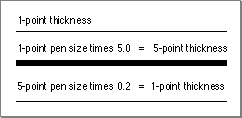

Legacy Document
Important: The information in this document is obsolete and should not be used for new development.
Important: The information in this document is obsolete and should not be used for new development.


Using Line-Drawing Picture Comments
Line-drawing picture comments, listed in Table B-1 on page B-8, provide your application with the ability to draw dashed lines (as described in the next section) and to display fractional line widths (as described in "Using Fractional Line Widths" on page B-36).Drawing Dashed Lines
Your application may use dashed lines frequently, particularly if it is a spreadsheet or accounting application. You can use theDashedLinepicture comment to draw dashed lines on capable printers without drawing each individual dash. You use theDashedStoppicture comment to tell the printer driver when you are finished sending dashed line information.When you use the
DashedLinecomment, the printer driver draws the indicated lines or rectangles. You should pass a handle to aTDashedLineRecrecord in thedataHandleparameter of thePicCommentprocedure. You use aTDashedLineRecrecord to specify how the dashed line should look. Here is how you should declare these as Pascal data structures:
TYPE TDashedLineHdl = ^TDashedLinePtr; TDashedLinePtr = ^TDashedLineRec; TDashedLineRec = PACKED RECORD offset: SignedByte; {offset} centered: SignedByte; {reserved; set to 0} intervals: ARRAY[0..0] OF SignedByte; {points for drawing and not } { drawing dashes} END;Use theoffsetfield to specify an offset as with the PostScriptsetdashoperator.The
centeredfield is reserved and should be set to 0. Your application must center the dashed lines.In the
intervalsfield, specify an array of dash intervals describing the number of points drawn for a dash and the number of points not drawn between them.You must provide both a QuickDraw and a picture comment version of the dashed line. The code in Listing B-9 uses the
PostScriptBeginandPostScriptEndpicture comments to hide QuickDraw code from PostScript, and it uses pattern mode 23 to render PostScript drawing invisible in QuickDraw.Listing B-9 Using the
DashedLinepicture comment
PROCEDURE DashDemo; CONST magicPen = 23; cx = 280; {center along x-axis} cy = 280; {center along y-axis} r0 = 200; {radius} VAR dashHdl: TDashedLineHdl; i: Integer; a, rad: Extended; BEGIN PenSize(2,2); {First the PostScript picture comment version. Pattern mode } { 23 makes the line drawing invisible to QuickDraw.} PenMode(magicPen); dashHdl := TDashedLineHdl(NewHandle(SizeOf(TDashedLineRec))); IF dashHdl <> NIL THEN WITH dashHdl^^ DO BEGIN offset := 4; {just for fun} centered := 0; {currently ignored--set to 0} intervals[0] := 2; {number of interval specs} intervals[1] := 4; {this means 4 points on ...} intervals[2] := 6; {... and 6 points off} PicComment(DashedLine, SizeOf(TDashedLineRec), Handle(dashHdl)); END; rad := 3.14159 / 180; {conversion degrees -> radians} FOR i := 0 TO 9 DO BEGIN {draw some dashed lines} a := i * 20 * rad; MoveTo(cx, cy); Line(round(r0 * cos(a)), - round(r0 * sin(a))); END; PicComment(DashedStop, 0, NIL); {that's enough!} DisposeHandle(Handle(dashHdl)); PenMode(srcOr); {no magic any more} {Now, the QuickDraw version. The PostScript driver must } { ignore it, so enclose it between PostScriptBegin and } { PostScriptEnd comments.} PicComment(PostScriptBegin, 0, NIL); PenSize(2,2); FOR i := 0 TO 9 DO BEGIN MoveTo(cx,cy); MyDashedQDLine(round(r0 * cos(i * 20 * rad)), - round(r0 * sin(i * 20 * rad)), dashHdl); END; PicComment(PostScriptEnd, 0, NIL); END;Using Fractional Line Widths
Your application may need lines as thin as possible or thinner than the screen can display, especially if it is a desktop publishing, spreadsheet, or design application. You can draw hairlines (lines that are less than 1/72 of an inch wide) with printer drivers that support theSetLineWidthpicture comment. Your application passes the printer driver a scaling factor (such as 1/4) that the driver applies to the pen size when rendering the picture.QuickDraw and the PostScript language define 1 point to be 1/72 of an inch, so there are exactly 72 points per inch on the Macintosh screen. The resolution of a PostScript device such as the 300-dpi LaserWriter printer is about four times that of the screen, so the driver can render lines that are approximately 1/4 of a point thick, which is about 1/288 of an inch.
When you specify the
SetLineWidthpicture comment in thekindparameter of thePicCommentprocedure, you also specify aTLineWidthHdlhandle (a handle to a data structure of typeTLineWidth) in thedataHandleparameter. TheTLineWidthdata structure is defined by thePointdata type. Here is how you should declare these as Pascal data types in your application:
TLineWidthHdl = ^TLineWidthPtr; TLineWidthPtr = ^TLineWidth; TLineWidth = Point; {v = numerator, h = denominator}Use the vertical coordinate of the point as the numerator and the horizontal coordinate as the denominator of the scaling factor: the driver multiplies the horizontal and vertical components of the pen by the scaling factor to obtain the new pen width. For example, if you have a pen size of (1,2) and yourSetLineWidthpicture comment uses 2 for the horizontal and 7 for the vertical, the pen size will then be (7/2) 1 pixel wide and
(7/2) 2 pixels high.In Figure B-9, the original pen size is 1 point. The first scaling factor is 5.0 or (5,1), which gives the pen a width of 5 points. The second scaling factor, applied to the new pen width, is 0.2 or (1,5), which gives the pen a width of 1 point again.
Figure B-9 Changing the pen width using the
SetLineWidthpicture comment
TheSetLineWidthpicture comment is implemented by all PostScript LaserWriter printer drivers and by some QuickDraw printer drivers. However, not all QuickDraw printer drivers supportSetLineWidth, and there is no backup solution for cases where it is not supported. Among QuickDraw printer drivers that do supportSetLineWidth, some drivers emulate PostScript printer drivers, while others--such as the QuickDraw LaserWriter SC driver--implementSetLineWidthdifferently.The difference between the implementations of the
SetLineWidthcomment by the PostScript LaserWriter driver and the QuickDraw LaserWriter SC driver is apparent as soon asSetLineWidthis used a second time. The PostScript driver keeps an internal line-scaling factor, which is initialized to 1.0 when a job is started. Each number passed throughSetLineWidthis multiplied by the current internal scaling factor to get the effective scaling factor for the pen size. The LaserWriter SC driver, on the other hand, replaces its current scaling factor for the pen size by the new value passed throughSetLineWidth.To support both implementations, you must always use an additional
SetLineWidthpicture comment to reset the PostScript driver line width to 1.0 before scaling to a new value width, as illustrated by the following lines of code:
PicComment(SetLineWidth, SizeOf(TLineWidth), Handle(1/oldLineWidth)); PicComment(SetLineWidth, SizeOf(TLineWidth), Handle(newLineWidth));For example, suppose your application set the line width to 0.25, and now it needs a line width of 0.5. The following twoSetLineWidthcomments have the desired effect on all PostScript and QuickDraw drivers that implement theSetLineWidthcomment.
Current line width,
PS driverCurrent line width,
QD driverValue passed along with SetLineWidthNew line width,
PS driverNew line width,
QD driver0.25 0.25 4/1 1.0 4.0 1.0 4.0 1/2 0.5 0.5 The sample code in Listing B-10 gives the expected results on PostScript LaserWriter and QuickDraw printer drivers that implement the
SetLineWidthcomment.Listing B-10 Using the
SetLineWidthpicture comment
PROCEDURE MySetNewLineWidth(oldWidth,newWidth: TLineWidth); VAR tempWidthH: TLineWidthHdl; BEGIN tempWidthH := TLineWidthHdl(NewHandle(SizeOf(TLineWidth))); tempWidthH^^.v := oldWidth.h; tempWidthH^^.h := oldWidth.v; PicComment(SetLineWidth, SizeOf(TLineWidth), Handle(tempWidthH)); tempWidthH^^ := newWidth; PicComment(SetLineWidth, SizeOf(TLineWidth), Handle(tempWidthH)); DisposeHandle(Handle(tempWidthH)); END; PROCEDURE MyLineWidthDemo; CONST y0 = 50; {top left of demo} x0 = 50; d0 = 440; {length of horizontal lines} e0 = 5; {distance between lines} kN = 5; {number of lines} VAR oldWidth,newWidth: TLineWidth; i,j,y: Integer; BEGIN PenNormal; y := y0; SetPt(oldWidth,1,1); {initial line width = 1.0} FOR i := 1 TO 5 DO BEGIN SetPt(newWidth,4,i); {want to set it to i/4 = 0.25, 0.50, 0.75 ...} SetNewLineWidth(oldWidth,newWidth); MoveTo(x0, y); Line(d0, 0); y := y + e0; oldWidth := newWidth; END; END;